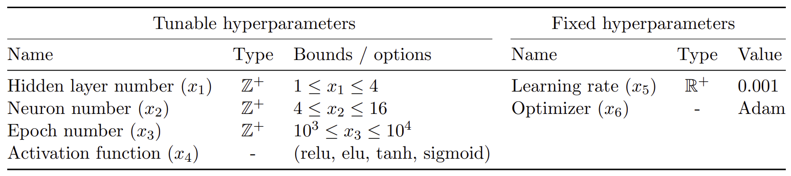

Hyperparameter
NNs use design variables \(\mathbf{x}_d\) as inputs to produce design objective functions \(f(\mathbf{x}_d)\). The network is trained to model complex relationships between these inputs and outputs, and its performance depends on HPs that shape the network’s structure and learning process. This paper focuses on key HPs, including learning rate, neuron and layer counts, epoch size, activation functions, and optimizers. Activation functions (e.g., ReLU, sigmoid) and optimizers (e.g., Adam, SGD) are treated as discrete HPs, with numerical labels assigned to facilitate optimization. These HPs play critical roles in determining the network’s capacity to learn patterns, avoid overfitting, and efficiently minimize loss. Proper tuning ensures the model balances learning complexity without overfitting or underfitting, while effective selection of activation functions and optimizers improves nonlinearity and weight adjustment for better model generalization. The HPs optimized include the number of layers, neurons, epoch size, and activation function, while learning rate and optimizer are fixed.
Table 1 : Table of hyperparameters with corresponding bounds for tunable parameters and values for fixed parameters used in numerical experiments.
{kind=link}
